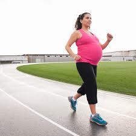
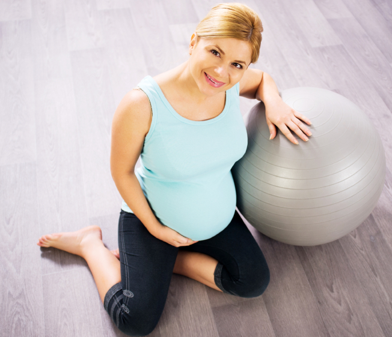

Regular workouts escpecially for you
The benefits of exercise during pregnancy
Exercise does wonders during pregnancy. It boosts mood, improves sleep, and reduces pregnancy aches and pains. It helps prevent and treat gestational diabetes and may keep preeclampsia at bay. It prepares you for childbirth by strengthening muscles and building endurance, and makes it much easier to get back in shape after your baby's born.The ideal workout gets your heart pumping, keeps you limber, manages weight gain, and prepares your muscles without causing undue physical stress for you or the baby.
The following activities are usually safe for expectant moms, although some of them may not work for you during the last few months of your pregnancy. Make sure you consult your healthcare provider before embarking on any exercise regimen.


4 cardiovascular exercises for moms-to-be
Walking
One of the best cardiovascular exercises for pregnant women, walking keeps you fit without jarring your knees and ankles. It's also easy to do almost anywhere, doesn't require any equipment beyond a good pair of supportive shoes, and is safe throughout all nine months of pregnancy.
Swimming
Healthcare providers and fitness experts hail swimming as the best and safest exercise for pregnant women. Swimming is ideal because it exercises both large muscle groups (arms and legs), provides cardiovascular benefits, and allows expectant women to feel weightless despite the extra pounds of pregnancy.
Low-impact aerobics
Aerobic exercise strengthens your heart and tones your body. And if you take a class for pregnant women, you'll enjoy the camaraderie of other moms-to-be and feel reassured that each movement is safe for you and your baby.
Dancing
You can get your heart pumping by dancing to your favorite tunes in the comfort of your own living room, with a DVD, or at a dance class, but steer clear of routines that call for leaps, jumps, or twirls.
Back